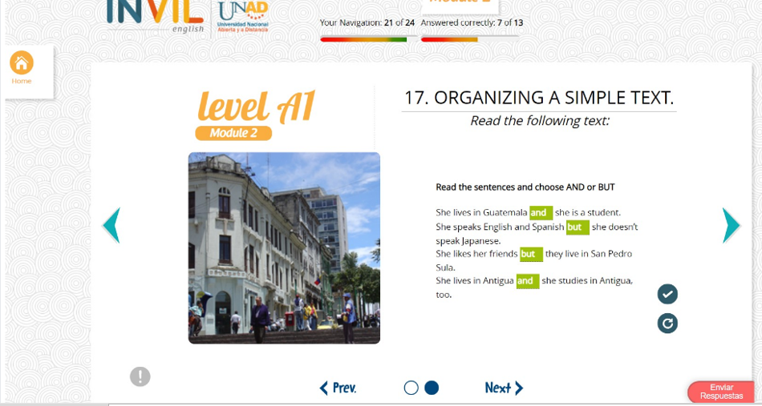
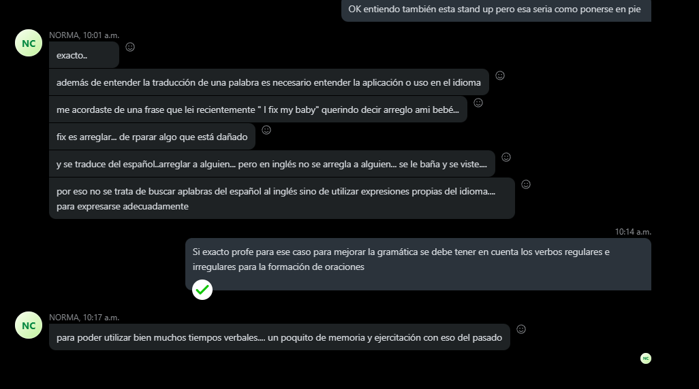
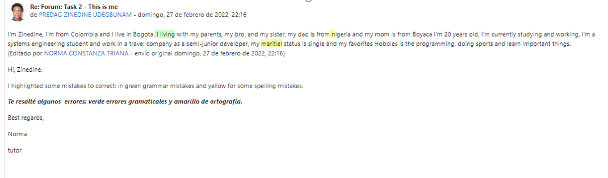
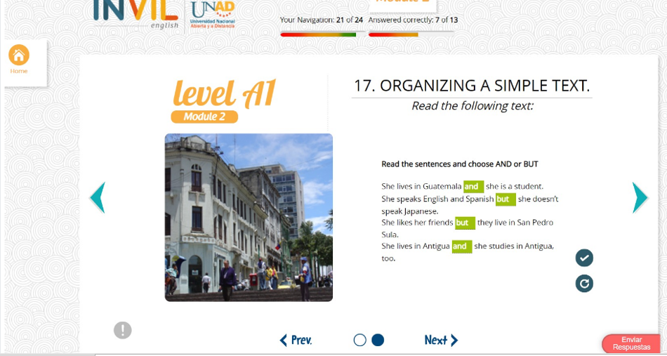
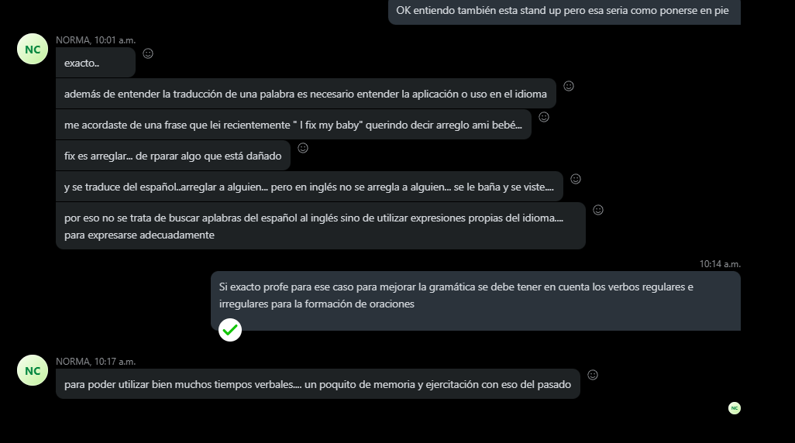
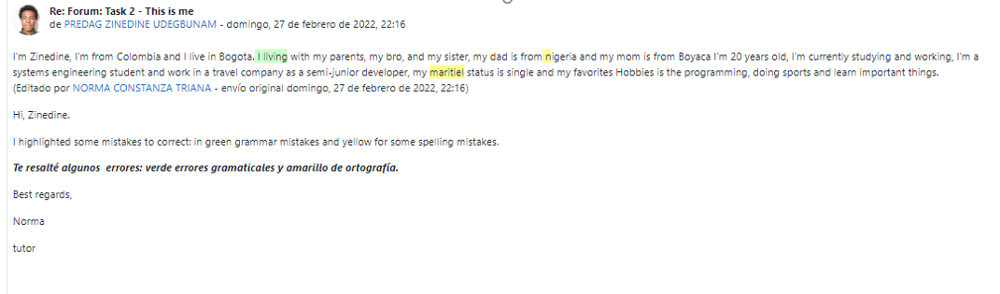

Hi, I’m Predag Zinedine Udegbunam, I’m from Colombia and I live in Bogota, Bogota is the capital of Colombia, I live with my parents, and my two siblings, a bro and a sister, my dad is Nigerian, he’s works as a freelancer and he’s 57 years old, my mom is boyacence and she’s 54 years old, she works in jewelry, my bro is a university student, he’s 22 years old and my sister is a high school student, she is 16 years old. I’m twenty years old, I’m currently studying and working, I’m a system engineering student and work in a travel company as a semi-junior developer, my marital status is single and my favorites hobbies is the programming, doing sports and learn important things.

I live in Soacha in a residential complex called Terra Grande 3 Etapa 2, the complex has a park and parking lot, my home is in front of the parking lot, my home has three floors, four bedrooms, a bathroom, a kitchen and a backdoor garden, my room is located on the second floor. Inside my room there is a bed, a desk a chair and has a window. I wake up in the mornings at 5:30 AM, I take a shower and then I take the breakfast at 6:15 AM, I leave my home to go work at 6:50 AM, I get to work by bicycle, I take the lunch at 12:30 PM at the same time watch documentaries and rest, later I go back my home at 5:30 PM, when I get home I like to watch some documentaries, practices programing and then go to the gym, later I take the dinner at 10:00 PM and I start studying a little, finally I go to bed at 12:30 AM and rest. On the weekends I like to train, make the lunch, read, study and rest
Participación
 





Autoevaluación
En este trabajo estudie y aprendi los temas del e-book, mi participación en el foro no fue constante debido a falta de tiempo pero estuve presente en las web conferencias como en el skype, mejore la habilidad de crear oraciones con algunos tiempos, la gramatica de algunas palabras, el speaking tengo algunos errores al momento de pronunciar palabras y uno constante es con los conectores and y but los cuales e venido mejorando con la practica, para mi el ingles es muy importante en lo personal y en la vida laboral ya que es un lenguaje universal el cual abre muchas oportunidades siento que siempre e tenido una conexion con este lenguaje desde muy pequeño y e venido mejorando y practicando y mi meta es llegar a tener un nivel de ingles a nivel de pensamiento el cual este acostumbrado a el.
Refelxión final
tuve algunos inconvenientes de tiempo los cuales no logre compratir con mis compañeros y la profesora los dos ultimos puntos que fueron el texto completo con conectores y el portafolio sin embargo aunque no estuviera muy interactivo en el grupo, estudie y sigo practicando lo aprendido en este trabajo.
Mi calificación
mi calificacion en este trabajo seria un 8, mi portafolio lo hice de tal manera que uni parte de mi carrera como ingeniero de sistemas, realizandolo de la forma mas sencilla pero utilizando html5 y css3 como parte de practica.